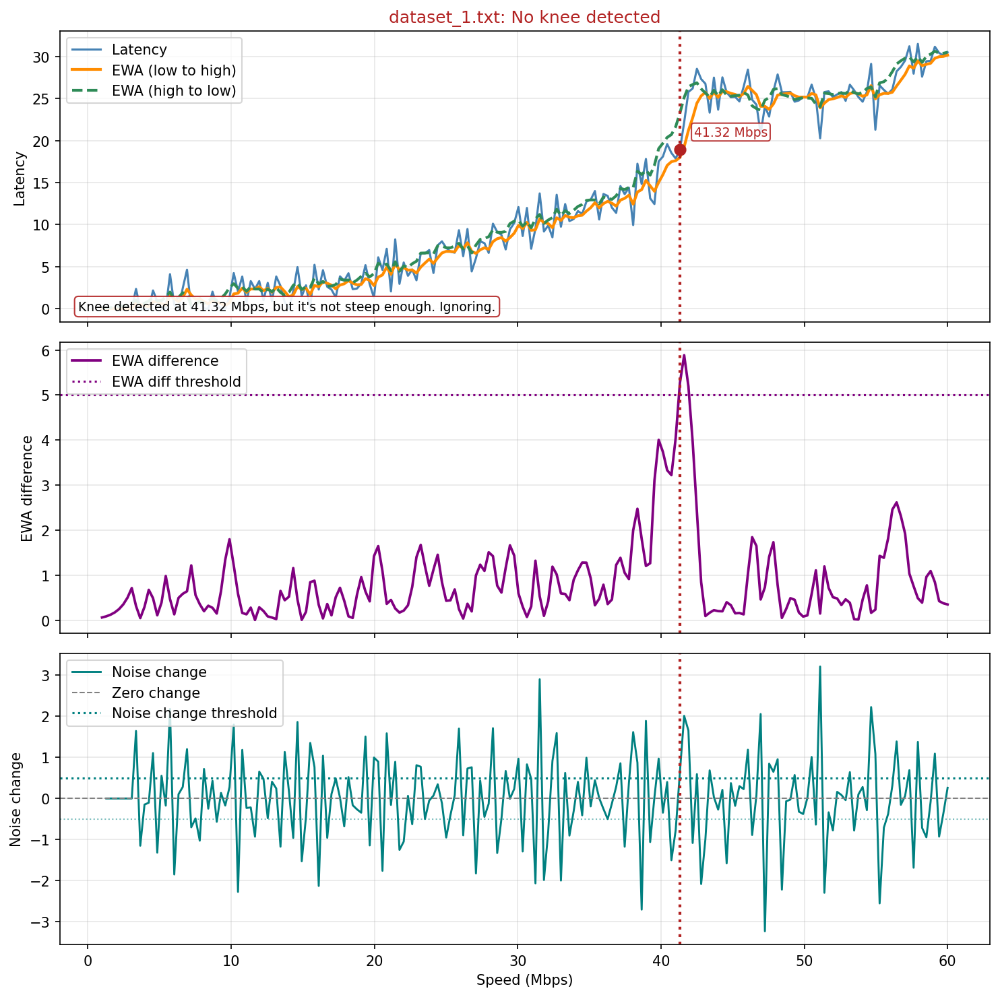
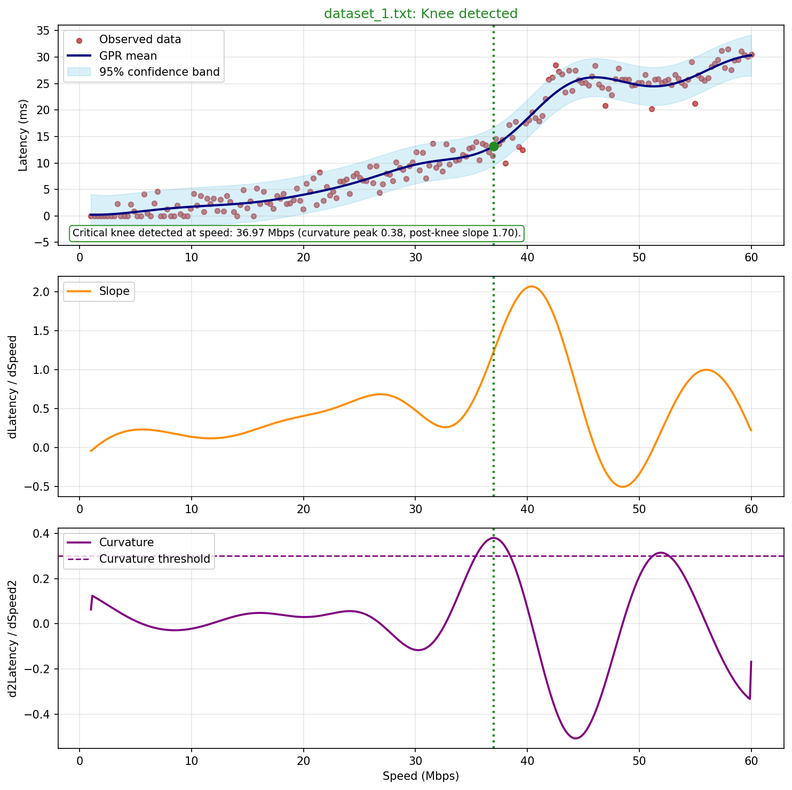

← Projects · $_ Code sheet · Visual50 internship, Madrid, Jun – Sep 2024
Congestion-knee
detection
Past a certain speed, latency climbs steeply and sending faster no longer helps. That point is the knee. I compared two ways of finding it in latency-versus-speed curves: a rule-based detector on smoothed signals, and Gaussian-process regression.
Context
Visual50 internship
Data
7 synthetic datasets
Methods
EWA heuristic, GPR
Language
Python
01Same data, two verdicts


Both detectors find a bend in dataset 1. The rule-based one then rejects it on its steepness check, while the Gaussian-process one accepts it.
02Data
A generator stands in for router telemetry: clear knees, soft or ambiguous transitions, gentle rises with no knee at all, and noisy measurements. Because it is synthetic, each detector can be checked against a known answer.
03Detectors
| Rule-based | Gaussian process | |
|---|---|---|
| Signals | Exponentially weighted averages run low-to-high and high-to-low, their difference, and a noise-change signal | A smoothed mean with a 95% band, its slope and its curvature |
| Decision | Thresholds on the difference, gradient and noise, and a minimum speed | A curvature threshold, a post-knee slope clearly steeper than before, and a minimum speed |
| Strength | Fast, and every decision is readable on the plot | Smooths the noise and shows its own uncertainty |
| Weakness | Sensitive to its thresholds | Still ends in hand-set rules |
04What I took from it
- Finding a knee and deciding to act on it are separate steps. A knee low in the speed range may not justify capping the link.
- The diagnostic plots are worth keeping. With only the verdict, either method looks equally confident.
- The data is synthetic and the thresholds are hand-tuned. This is an exploration of the idea and has no feedback controller.
05Stack
PythonNumPyscikit-learnMatplotlib